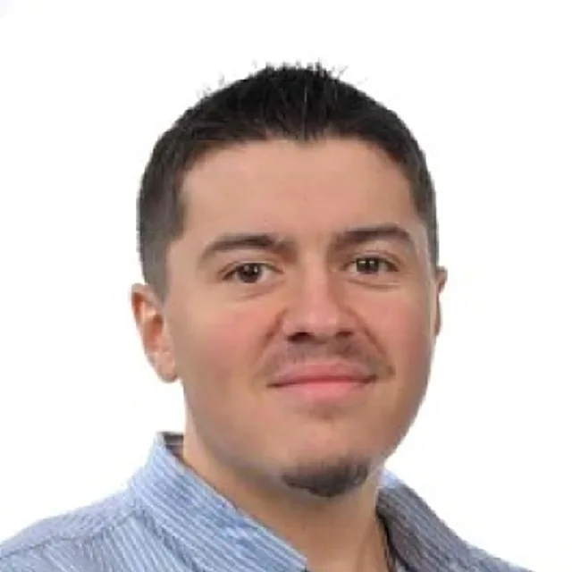
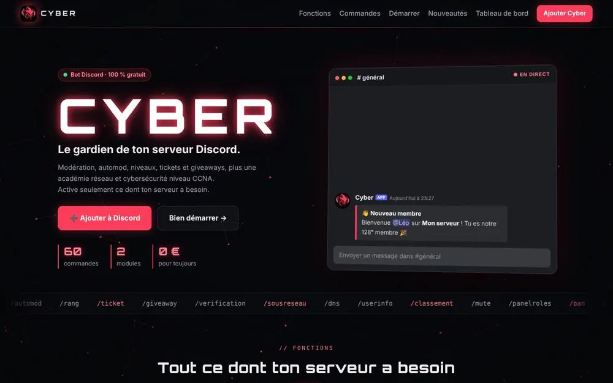
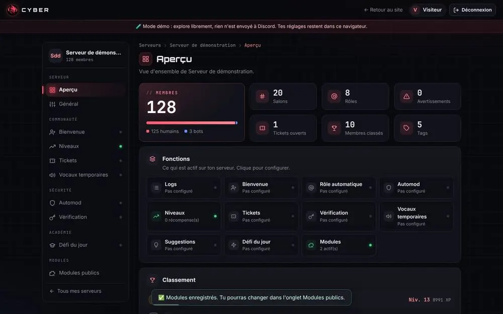
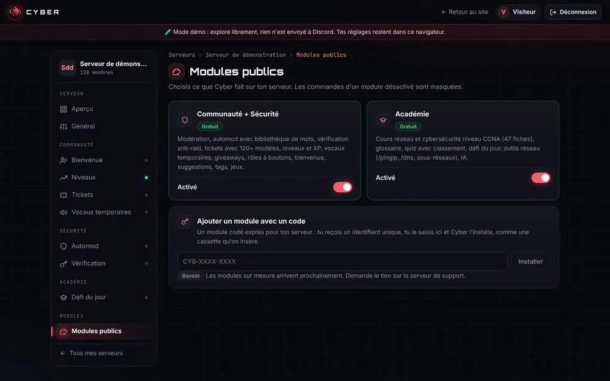

Piano
Je pratique le piano depuis 5 ans, d'abord en autodidacte, et j'entame ma deuxième année à l'école de musique Lucien Blin de Nogent-le-Rotrou. La musique, c'est mon côté artistique : elle demande de la patience et beaucoup de pratique.
BTS CIEL en alternance chez SOPARCO · Informatique & Réseaux
J'apprends à construire, administrer et sécuriser les infrastructures informatiques, du câble jusqu'au serveur.
Je cherche une alternance en licence, licence pro ou bachelor cybersécurité et réseaux, pour la rentrée de septembre 2028.

Sablons-sur-HuisneEn ce moment
01 — Mon histoire
« Comprendre avant de juger : chaque détail et chaque connaissance comptent. »
Je m'appelle Enzo, j'habite à Sablons-sur-Huisne, dans le Perche, à une dizaine de kilomètres de Nogent-le-Rotrou. Après un bac professionnel CIEL obtenu avec mention Bien au Lycée des Métiers Sully à Nogent-le-Rotrou, j'y poursuis depuis septembre 2026 un BTS CIEL, option Informatique et Réseaux, en alternance au service informatique de SOPARCO SAS.
Ce qui me passionne, ce sont les réseaux et la curiosité de comprendre les systèmes, qu'il s'agisse d'infrastructure ou de cybersécurité. En TP, j'ai déjà configuré des équipements Cisco, des serveurs Windows et Linux et un pare-feu IPFire (détails plus bas, dans Compétences).
En ce moment, je suis la formation CCNA de Cisco sur Netacad, en commençant par le module 1, et je prépare un homelab personnel pour continuer à pratiquer chez moi.
En dehors des cours
Je pratique le piano depuis 5 ans, d'abord en autodidacte, et j'entame ma deuxième année à l'école de musique Lucien Blin de Nogent-le-Rotrou. La musique, c'est mon côté artistique : elle demande de la patience et beaucoup de pratique.
J'entame ma 6e saison au RCPN, le club de Nogent-le-Rotrou, le seul où j'ai joué. J'évolue surtout en U19, avec quelques matchs en senior, au poste de centre (12/13). J'y trouve l'esprit d'équipe et l'engagement, sur le terrain comme en dehors.
02 — Parcours
Après mon BTS, poursuivre mes études en licence, en licence professionnelle ou en bachelor orienté cybersécurité et réseaux, toujours en alternance : dans ce domaine, l'expérience en entreprise est essentielle.
Assistance informatique aux utilisateurs des bureaux et des ateliers : résolution de problèmes informatiques, besoins matériels courants, interventions liées au réseau et dépannage des terminaux de machines et des imprimantes d'étiquettes connectés au réseau.
À venir : participation au projet de connexion Wi-Fi de terminaux de machines et d'imprimantes d'étiquettes.
À venir aussi : un nouveau bâtiment est en construction, avec une nouvelle baie informatique et des équipements à installer et configurer.
Réseaux, systèmes, virtualisation, cybersécurité et développement, avec des TP sur équipements Cisco. Formation suivie en alternance.
Un bot Discord gratuit et sécurisé, avec son panel web et son site, mené de A à Z : besoins, infrastructure (DNS, Cloudflare, GitHub), audits de sécurité et conformité RGPD.
Voir le projet complet ↓Cybersécurité, Informatique et réseaux, Électronique : mes premières bases dans ces domaines, avec en terminale le projet Mini Batak Pro, une infrastructure réseau segmentée et sécurisée. Mes stages (PFMP) en informatique m'ont conforté dans ma curiosité et dans mon choix d'avenir. Diplôme obtenu avec mention Bien, en section européenne anglais, avec 14,5/20 de moyenne au dernier semestre.
SVFI Informatique, Bretoncelles (2 × 1 mois, 2024-2025) : préparation de postes Windows 10, installations de logiciels automatisées avec PowerShell et Winget, sensibilisation à la cybersécurité.
WI Informatique, Bellême (1 semaine, 2023) : accueil des clients, réparation d'ordinateurs, interventions sur site.
Optymum Electronic, Berd'huis (2 stages de 3 semaines et 5 semaines d'intérim, 2023) : brasage de composants, procédures de production, travail en équipe.
03 — Compétences
Configuration de switchs et de routeurs Cisco en ligne de commande, en console puis via SSH : VLAN, trunk entre switchs et vers un routeur, routage inter-VLAN, adressage IPv4 et sous-réseaux, diagnostic de connectivité.
Paramétrage de serveurs Windows et Linux : domaine Active Directory, utilisateurs et GPO, DHCP sous Windows Server et Debian. Administration Linux en SSH, avec Node-RED et le broker MQTT Mosquitto.
Pare-feu IPFire à plusieurs zones (LAN, Wi-Fi, DMZ, WAN), règles de filtrage limitées au nécessaire et analyse des blocages dans les journaux. Le domaine dans lequel je veux me spécialiser.
Assistance aux utilisateurs en alternance, installation et configuration de postes Windows, automatisation d'installations avec PowerShell et Winget en stage, réparation de PC.
Machines virtuelles sous Proxmox pour les TP : pare-feu, serveur et postes de test, raccordés aux bons VLAN. Homelab personnel sous Proxmox en préparation.
Lecture de schémas, brasage et manipulation de composants en milieu industriel, algorithmique et programmation en C/C++ sur Arduino.
04 — Projets
Bot Discord gratuit et sécurisé avec panel web, site sur mon domaine cyberbot.fr, tunnel Cloudflare, six audits de sécurité menés avec l'IA et mise en conformité RGPD.
Maquette d'un réseau segmenté en deux VLAN sur un switch Cisco relié à un routeur, configurée en ligne de commande : création des VLAN, affectation des ports, liaison trunk, routage inter-VLAN et vérification.
show vlan brief, show interfaces trunk, show interfacesProjet personnel pour pratiquer chez moi dans un environnement de test. Le mini PC est prévu pour Noël 2026 : l'installation se fera dans la foulée.
Projet de terminale (mars – juin 2026) : déployer une infrastructure réseau segmentée et sécurisée pour transmettre les données d'un objet connecté ESP32-S3 vers un serveur Node-RED, via un broker MQTT.
Étapes du projet
Diagnostic
Une publication MQTT depuis une machine de test placée dans la zone Wi-Fi échouait. J'ai repéré le flux TCP 1883 bloqué dans les journaux IPFire, puis étudié une règle qui n'autorise que ce flux vers le serveur, au lieu d'ouvrir toute la DMZ.
Projet mené jusqu'au bout : TP 4.8 réalisé et véritable ESP32-S3 raccordé à l'infrastructure.
Configuration des postes et d'un routeur pour faire communiquer deux réseaux, tests de connectivité et recherche d'erreurs de configuration.
ping et recherche de la cause des « Request timed out »Configuration d'un pare-feu IPFire qui sépare trois zones : le WAN (RED), le réseau local (GREEN) et une DMZ (ORANGE) qui héberge un serveur FTP.
Paramétrage de serveurs pour gérer un petit réseau d'entreprise : domaine, comptes utilisateurs et attribution automatique des adresses IP.
En stage chez SVFI Informatique, à Bretoncelles : préparation de postes Windows pour les clients, avec des installations de logiciels automatisées.
Aucun projet dans cette catégorie pour l'instant.
05 — Projet personnel · octobre 2026
Un serveur Discord empile souvent cinq ou six bots différents. J'ai voulu un seul bot, gratuit et modulable, qui remplace les autres (modération, automod, tickets, niveaux, giveaways, vérification), avec en plus un module pour réviser les réseaux au niveau CCNA, en lien avec mon BTS CIEL.
Du 25 au 30 octobre 2026, le projet est passé de 20 à 61 commandes, avec des modules activables par serveur, deux langues (français et anglais), un panel d'administration ouvert à tous et un site public sur mon propre nom de domaine.
Mon rôle
J'ai mené le projet comme porteur du projet et responsable de l'infrastructure. Le code a été écrit avec l'IA Claude, utilisée comme développeur et formateur. De mon côté :

Ce que j'ai mis en place
DNS (A, CNAME, TXT, SPF, DMARC), domaine cyberbot.fr en HTTPS, tunnel Cloudflare pour exposer le panel sans ouvrir de port, problème IPv4/IPv6 résolu.
Secrets jamais publiés, moindre privilège, protections contre le XSS, le CSRF et le SSRF, sauvegardes automatiques. Le panel a d'abord été fermé par Cloudflare Access (code par mail et double authentification), puis ouvert à tous après un audit dédié.
Commande /mesdonnees (accès et effacement), suppression automatique des données, politique de confidentialité, conditions et mentions légales.
Passage de fichiers JSON à une base SQLite, avec import automatique et repli de secours.
Serveur supprimé par l'hébergeur : retour en local, régénération de tous les secrets et mise en place de sauvegardes.
Module optionnel pour réviser le CCNA : 47 fiches de cours, 498 questions de quiz, un glossaire et un défi du jour.
Version après version · 10 versions en 6 jours
Comment tout s'assemble


Outils
Ce que j'ai appris
Lire un message d'erreur avant de paniquer, toujours avoir une sauvegarde, ne pas confier l'essentiel à un hébergement gratuit et piloter un projet avec des règles claires, des tests systématiques et une bonne documentation.
La suite
Héberger le bot sur mon homelab (un mini PC HP EliteDesk prévu pour Noël), proposer des modules sur mesure (annoncés « Bientôt ») et atteindre 75 serveurs pour demander la vérification Discord.
06 — Contact
Une question sur mon parcours, sur un de mes projets ou l'envie d'échanger autour des réseaux et de la cybersécurité ? Laissez-moi un message, je vous recontacte dès que possible.
Les champs marqués d'un * sont obligatoires.
Compétences validées
Enzo Cerejo, personne physique. Ce portfolio est un site personnel publié à titre non professionnel, sans activité commerciale ni publicité. Contact : via le formulaire de contact de ce site.
Enzo Cerejo.
GitHub, Inc. (service GitHub Pages) · 88 Colin P. Kelly Jr. Street, San Francisco, CA 94107, États-Unis · Téléphone : +1 877 448 4820 · github.com
Les textes, schémas et photos de ce site appartiennent à Enzo Cerejo, sauf mention contraire. Toute reproduction sans autorisation est interdite. Les certificats sont délivrés par Cisco Networking Academy. Les noms et logos cités (Cisco, LinkedIn, SOPARCO…) appartiennent à leurs propriétaires respectifs.
Enzo Cerejo, joignable via le formulaire de contact de ce site.
Le formulaire de contact recueille votre prénom, votre nom, votre e-mail, l'objet et votre message (champs obligatoires, marqués d'un *), ainsi que, si vous le souhaitez, votre entreprise, votre fonction, votre téléphone et des précisions. Ces données servent uniquement à répondre à votre demande. Sans les champs obligatoires, je ne peux pas vous répondre.
Votre consentement, donné en cochant la case du formulaire. Vous pouvez le retirer à tout moment.
Vos messages ne sont lus que par moi. Ils me sont transmis par e-mail grâce au service Web3Forms (Web3Creative, Inde), dont les serveurs sont situés aux États-Unis : Web3Forms indique ne pas conserver les messages et supprimer ses journaux techniques tous les deux mois. Ils sont ensuite reçus dans ma messagerie Proton Mail (Suisse). Vos données ne sont ni vendues ni utilisées à des fins commerciales.
Certaines données techniques quittent l'Union européenne : les messages du formulaire transitent par les États-Unis (Web3Forms) ; l'hébergeur GitHub enregistre l'adresse IP des visiteurs pour des raisons de sécurité. Les polices d'écriture sont hébergées directement sur le site : aucune donnée n'est envoyée à Google.
Les messages sont conservés le temps de notre échange, puis supprimés au plus tard 12 mois après le dernier contact.
Vous pouvez accéder à vos données, les faire rectifier ou effacer, limiter leur traitement, vous y opposer, demander leur portabilité et retirer votre consentement, en écrivant via le formulaire de contact. Si vous estimez que vos droits ne sont pas respectés, vous pouvez adresser une réclamation à la CNIL (cnil.fr).
Ce site n'utilise ni cookie publicitaire ni outil de mesure d'audience. Il enregistre seulement dans votre navigateur la langue choisie (français ou anglais) : ce réglage d'affichage est exempté de consentement selon les recommandations de la CNIL.
Dernière mise à jour : octobre 2026
Enzo Cerejo, private individual. This portfolio is a personal, non-commercial website with no advertising. Contact: through the contact form on this site.
Enzo Cerejo.
GitHub, Inc. (GitHub Pages) · 88 Colin P. Kelly Jr. Street, San Francisco, CA 94107, United States · Phone: +1 877 448 4820 · github.com
The texts, diagrams and photos on this site belong to Enzo Cerejo unless stated otherwise. Reproduction without permission is prohibited. Certificates are issued by Cisco Networking Academy. The names and logos mentioned (Cisco, LinkedIn, SOPARCO…) belong to their respective owners.
Enzo Cerejo, reachable through the contact form on this site.
The contact form collects your first name, last name, email, subject and message (required fields, marked with *), and, if you wish, your company, job title, phone number and details. This data is used only to reply to your request. Without the required fields, I cannot reply to you.
Your consent, given by ticking the box on the form. You can withdraw it at any time.
Your messages are read only by me. They are sent to me by email through the Web3Forms service (Web3Creative, India), whose servers are located in the United States: Web3Forms states that it does not store messages and deletes its technical logs every two months. They are then received in my Proton Mail inbox (Switzerland). Your data is never sold or used for commercial purposes.
Some technical data leaves the European Union: contact form messages pass through the United States (Web3Forms); the hosting provider GitHub logs visitors' IP addresses for security purposes. Fonts are hosted on the site itself: no data is sent to Google.
Messages are kept for the duration of our exchange, then deleted no later than 12 months after the last contact.
You can access your data, have it corrected or deleted, restrict or object to its processing, request its portability and withdraw your consent, by writing through the contact form. If you believe your rights are not respected, you can file a complaint with the CNIL, the French data protection authority (cnil.fr).
This site uses no advertising cookies and no analytics. It only stores your chosen language (French or English) in your browser: this display setting is exempt from consent under the CNIL's guidelines.
Last updated: October 2026